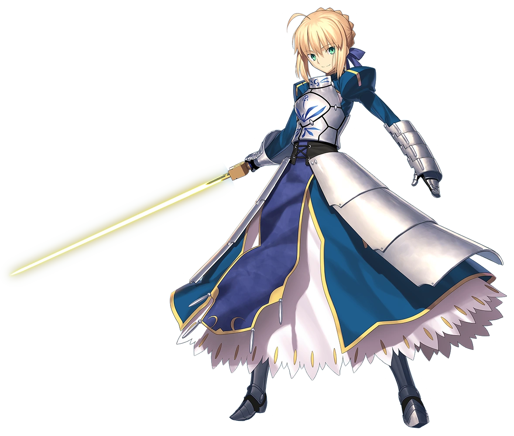

Olá Mundo!

Artoria Pendragon (アルトリア・ペンドラゴン, Arutoria Pendoragon?, also romanized as Arturia and Altria), Class Name Saber (セイバー, Seibā?), is one of the main characters of Fate/Zero and one of the three main heroines of Fate/stay night.
She is the Saber-class Servant of Kiritsugu Emiya in the Fourth Holy Grail War and Shirou Emiya in the Fifth Holy Grail War.
FGO